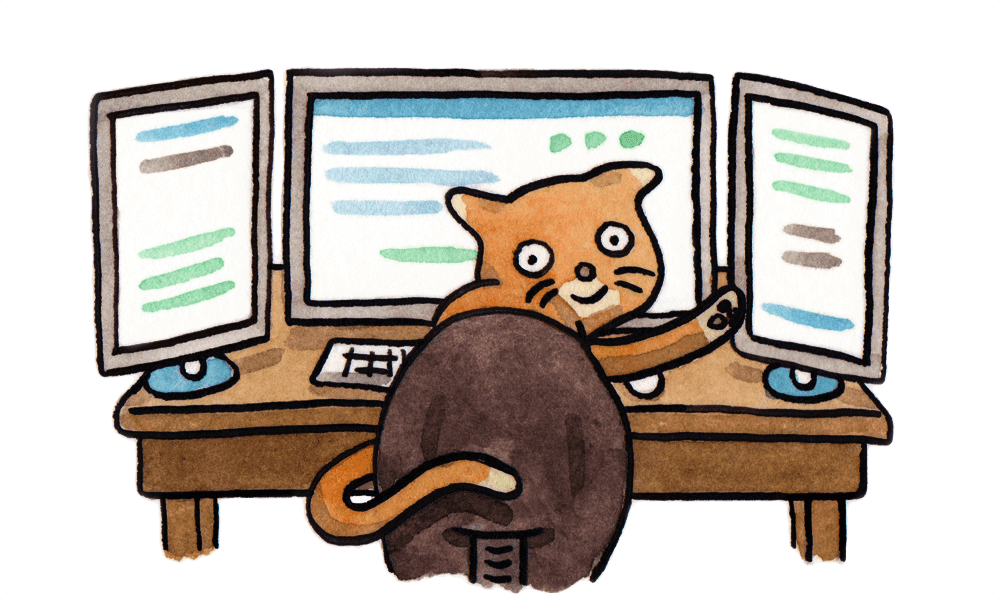

-
速度超快
Yarn 缓存了每个下载过的包，所以再次使用时无需重复下载。 同时利用并行下载以最大化资源利用率，因此安装速度更快。
-
超级安全
在执行代码之前，Yarn 会通过算法校验每个安装包的完整性。
-

超级可靠
使用详细、简洁的锁文件格式和明确的安装算法，Yarn 能够保证在不同系统上无差异的工作。
-
离线模式
如果你以前安装过某个包，再次安装时可以在没有任何互联网连接的情况下进行。
-
确定性
不管安装顺序如何，相同的依赖关系将在每台机器上以相同的方式安装
-
网络性能
Yarn 有效地对请求进行排队处理，避免发起的请求如瀑布般倾泻，以便最大限度地利用网络资源。
-
Same Packages
从 npm 安装所有包，让你的工作流程保持一致。
-
网络弹性
重试机制确保单个请求失败并不会导致整个安装失败。
-
扁平模式
将依赖包的不同版本归结为单个版本，以避免创建多个副本。